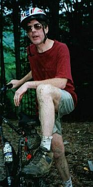

Things to do in the Summer
Golfing, Swimming and Boating
(all within 15 minutes of the chalet)
There are some excellent 18-hole golf courses in the area:
- Holiday Valley
- Elkdale
- Holiday Valley - 3-pool complex
- Red House, Allegany State Park
- Quaker Area, Allegany State Park
- Red House, Allegany State Park (non-motorized)
- Kenzua Reservoir (motorized, 35 minutes from the chalet) - 40 miles of fully motorized boating.
Hiking
(5 minutes from the chalet)
|
|
You can start walking with your friends and family, and end up waiting for the slow-pokes who fall behind. |
These pictures were taken on the white trail, part of the Finger Lakes Trail (FLT), at Little Rock City. This trail takes you down from the rocks to the CCC camp. The CCC camp is a short walk down the road from the chalet. At a moderate pace, slow enough so that most of the kids don't fall behind, it takes about 1 hour to walk down.
Some people have walked up and down the trail, but walking up can be an unpleasant experience. For most people, driving up to Little Rock City in your car and then hiking down is the best solution. Getting back to the car after the hike is the only challenge.
Here are a few links to information on the Finger Lakes Trails
Mountain Biking
(5 minutes from the chalet)
Jim, TC and Scott after a morning bike.
There are other paved biking trails in Allegany State Park. That bike trip is a little lower on the adrenaline, and a little higher on the scenery. Biking in Allegany is something the entire family can do. Allegany is about a 14 minute drive from the chalet.
A bit further away is Allegheny National Forest. WNYMBA also has trail information for this area.
One more thing, bikes are not allowed on all hiking trails. Check WNYMBA for some guidelines, or check with officials at the park you want to bike. Doing this ensures the trails stay open for everyone and you don't get fined or arrested.

"Man, sometimes that mud just gets the better of me" |
"Biking is fun, but keep your mouth closed" |
Horseback Riding
(9 minutes from the chalet)
If you are looking for either a fast gallop through the open fields or a nice easy ride through the countryside, the riding stable has it all for you. Easy to get to and remember, the hot tub awaits your arrival back home!!!!
Little Rock City
(10 minutes from the chalet)
There are plenty of good photo opportunities. When it is dry out, it is great fun to run around in between the rocks. Just make sure that everyone knows where to meet if they get lost. Towards the beginning (or the end) of the purple trail, there is a tree that is growing up the side of one of the rocks. We call this "the roots". Almost everyone who comes to Little Rock City gets their picture taken by the roots.
If you have a good picture of people by the roots, email it to me (scott@dickersonchalet.com) and I'll add it to this page.
Allegany State Park and National Forest
(15 minutes from the chalet)
The Red House area of Allegany State Park is about a 14 minute drive from the chalet. Red House has one sand beach for swimming, hiking and nature trails that do double duty for horseback riding, biking, cross-country skiing and snowmobiling. In short, if you get bored hiking around the chalet or in Rock City State, there is lots of hiking to be had here.
The view of Rt. 17 from the entrance to Allegany State Park
Both of these pictures were taken overlooking the Red House Lake.
Note: There appears the be a number of ways to spell Allegany. The NYS Parks web site spells it "Allegany". The national forest is spelled "Allegheny". They are two different parks, one state and one federal, with the same namesake - almost. So, don't get aggravated if you see Allegany spelled in different ways.
Design by: Scott (scott@dickersonchalet.com)